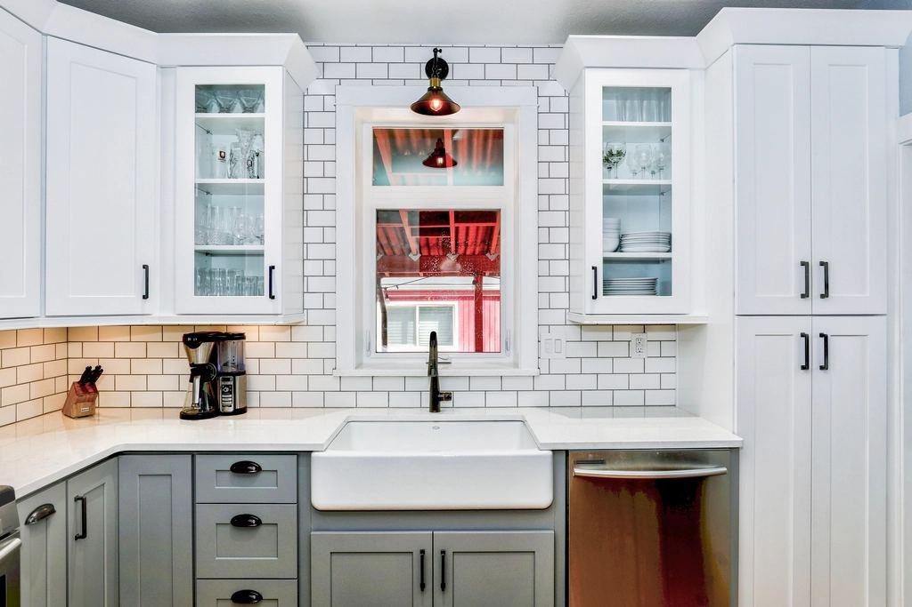
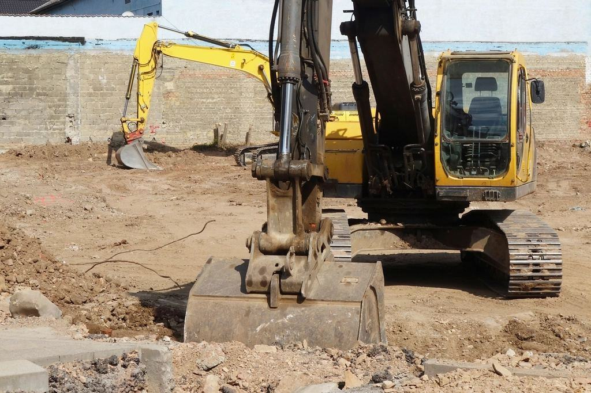

Tjänster
Vi är sällan billigast. Våra uppdrag är ofta i fastigheter där ett skadat stuckaturtak eller ett dammigt trapphus kostar mer än hela rivningen. Därför arbetar vi med undertryck, dagliga partikelmätningar och en antikvarisk plan för varje byggnad.
Vad ska bort – och vad ska sparas?

Invändig rivning i bebodda hus
I en bostadsrättsförening på Östermalm bor grannarna kvar, hissen används och trapphuset har marmorgolv. Vi skyddar allt från entrédörr till arbetsplats och bär ut rivningsmaterialet i slutna säckar.
Bullriga moment görs mellan 9 och 16 och anmäls i förväg till styrelsen och grannarna.

Antikvarisk demontering
Kakelugnar, speglar, fyllningsdörrar och stuckaturdetaljer dokumenteras, numreras och demonteras innan rivningen börjar. Sofie Adler upprättar den antikvariska planen tillsammans med fastighetsägaren.
Vi har demonterat och återuppsatt 64 kakelugnar sedan 2012.

Butiker, hotell och restauranger
På Biblioteksgatan och i Gamla stan går det inte att stänga för en ombyggnad. Vi river nattetid och lämnar lokalen städad och dammfri till öppning klockan tio.
Transporter sker med eldrivna lastbilar mellan klockan 22 och 06.

Miljösanering i äldre fastigheter
Sekelskiftesfastigheter har ofta asbest i rörisolering, PCB i fogar från 60-talets renoveringar och blyhaltig färg. Allt saneras innan rivningen börjar.
Vår saneringsgrupp arbetar med undertrycksaggregat och dekontamineringssluss i trappuppgången.
Antikvarisk plan före första skruven
- 1

Besiktning
Carl och Sofie går igenom fastigheten och markerar vad som ska bort och vad som ska sparas.
- 2

Antikvarisk plan
Vi dokumenterar kulturvärden och tar fram en skyddsplan för trapphus, hiss och grannytor.
- 3

Varsam rivning
Sanering först, demontering sedan och rivning sist – med partikelmätning varje dag.
- 4

Överlämning
Vi lämnar en dokumentation med foton och en lista över allt som magasinerats.
Sakkunniga, certifierade och försäkrade
- Certifierad sakkunnig kulturvärdenSofie Adler är certifierad sakkunnig kulturvärden enligt plan- och bygglagen.
- AsbesttillståndArbetsmiljöverkets tillstånd för asbestsanering, med medicinska kontroller för alla sanerare.
- ISO 14001Certifierat miljöledningssystem med mätbara mål för damm och transporter.
- Ansvarsförsäkring 25 MkrFörsäkring som täcker skador på fastighet, inredning och magasinerat gods.